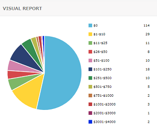
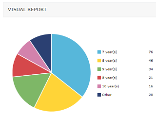

保有ドメインの査定結果は「0ドル」になりました
使っていないドメインを整理するため、保有しているドメインを査定してみたのですが、ほとんどのドメインは「無価値」の結果が出てくることになりました。
EstiBotというツールを使ってみたのですが、約60％が「0ドル」の結果が出てきたようです。

ただ、中には3,000ドルを超えるドメインが二つあり、500ドル以上のも13個あるようで、これらのなかで使ってないものがあれば、売却しようと考えています。
Godaddyの査定ツールでもほぼ似たような価格が出てくるのですが、実際に売れるのかどうかはまた別問題なのかもしれません。
ちなみに、sedoやgodaddyでは何個か売却したことはありますが、sedoでの手順についてはこちらの過去記事をご参照ください。
問題は「0ドル」の結果が出てきた無価値なドメインたちについてですが、長い年月を保有しているため、そのほとんどが７年から10年の運営歴が付いてしまっています。なかには13年もののドメインもあり、これを捨ててしまうのは忍びない気もします。

いずれ新しいサイトを作る際に保有していたのですが、いつまで経っても使う機会がないですし、現在はドメインの価格が高騰して管理費用も負担になってきたため、今年の年末限りで損切りする予定でいます。
一方で、どのようなドメインに需要があるのかが少し分かってきたため、廃棄と同時に取得もしてみようと考えてます。
やはり、需要があるのは短めの「comドメイン」で、orgやnetなどでも既に取得されており、検索回数の多いキーワードの含まれる金融系のドメインに需要があると感じています。
ただ、４文字のcomも持ってはいるのですが、せいぜい300ドル程度だったため、短めの.comドメインだからといって売れるわけでもないと思います。ドメインで稼ぐのは買い手の資力とタイミング的な要素が大きいのかなと感じています。